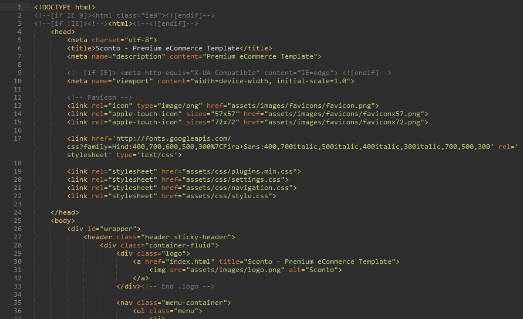

Sconto - Premium Bootstrap Template
We created this template with Bootstrap Framework. We highly recommend you tO visit their website and learn more about to bootstrap components and plugins. You can find this template only at the Themeforest marketplace.
YOUR CODES GOES HERE
Our you can use the grid system with 2 columns like this;
YOUR CODES GOES HEREYOUR CODES GOES HERE
Our you can use the grid system with 3 columns like this;
YOUR CODES GOES HEREYOUR CODES GOES HEREYOUR CODES GOES HERE
Go to Node website and install node js. Npm comes with node so you don't have to install it separately.
After the installation, Go to your project folder, open your command line and run npm install to setup your project. This command will install the packages listed in the package.json. See below to dependencies.
"devDependencies": {
"browser-sync": "^2.12.3",
"gulp": "^3.9.1",
"gulp-autoprefixer": "^3.1.0",
"gulp-concat": "^2.6.0",
"gulp-cssmin": "^0.1.7",
"gulp-htmlmin": "^1.3.0",
"gulp-if": "^2.0.0",
"gulp-imagemin": "^2.4.0",
"gulp-load-plugins": "^1.2.2",
"gulp-order": "^1.1.1",
"gulp-rename": "^1.2.2",
"gulp-sass": "^2.3.1",
"gulp-uglify": "^1.5.1",
"imagemin-jpeg-recompress": "^4.3.0",
"imagemin-pngquant": "^4.2.0",
"sprity": "^1.0.8",
"sprity-sass": "^1.0.4"
}
After installing these packages see the gulp section below to understand about gulp and tasks for this project.
If you don't want use SASS or any other packages/tools you can just ignore these steps and make changes ,n the style.css and etc... Node gulp and etc.. are here just to make your work fun and to provide you a automated workflow. :)
After installing Node you need to install gulp. We used gulp to automate our workflow. For example we used gulp-sass to conver our SASS files to CSS. Install Gulp
Open your bash and run the command below
To instal gulp cli
npm install --global gulp-cli
These are the task you can use
gulp-css - This will concat all the css files in css/plugins folder and give you plugin.css and plugins.min.css files
gulp-js - This will concat all the js files in js/plugins folder and give you plugin.js and plugins.min.js files
gulp-sass - This will convert your sass files to style.css file
gulp-imagemin - This task help you to optimize all your images in the images folder.
gulp-htmlmin - This minify all of your html codes in the html file. Please backup all your html files if you want to use this task.
gulp-sprites - This will create the sprite.png file based on the assets/images/icons folder. This will also create sprite@2x.png file for Retina Display.
gulp-sync - This task is the beauty. This will create a server for you and watch all your files (css/js/html/icons folder) and reload your browser for you. And convert all Scss files to Css when you change something. And watch your plugins folders and run gulp-js or gulp-css task if you add/edit/remove any files. And also will watch your images/icons folder and create sprite.png file, sprite.scss file and rerun the sass taks for you to create style.css.
This task will create a local server for you. localhost:3000/sconto
You can change the Sconto name with your project name in the gulpfile.js
plugins.browserSync({
proxy: 'localhost/sconto/' -- Find this code and change the name with yours
});
So all you have to do is go open your bash and go to your project folder. And run gulp-sync task and start working on your project and do not waste any time with browser reload and etc..
Caution: If you have any sass errors, server will stop working. You need to fix that bug re-run gulp-sync taks again to restart server.
Gulp-sprites: You need to add x2 version to icons folder. This taks will scale your image and create both sprite.png file and sprite@2x.png file for you. So if you have 10px X 10px icon, you need to make it 20px X 20px and then save it to the icons folder. This is necessary to create Retida Display Ready icons. You can learn more about this package at their website.
All Html codes are tested an validated. There are no HTML errors. Mostly there 3 main parts in our HTML pages. Header + Main + Footer section.
If you want to make container-fluid class's width maximum 1920px, add #wrapper element boxed class.
All css file used in all pages are listed in the plugins folder. These files combined with gulp and gulp created plugins.css and plugins.min.css files. We are using plugins.min.css file in all pages instead of all those plugins. You can delete plugins folder in production. This is the beauty using gulp in development.
Style.css file is our main.css file. If you don't know how to use SASS or don't need to use it, you can make your changes in style.css file. This file is also well commented and coded.
layer.css - navigation.css and settings.css files are related to the Revolution plugin. You can change slider related styles in those files. For more see revolution slider's documentation.
Open style.css file in your text editor. Use CTRL/Command + H shortcuts to open find and replace. And change the hex code with your color. But don't forget always using sass is better :)
If you want to use Scss files, please see the structure image. All Scss files all well commented and coded. Common elements are in the elements folder.
You change some predefined styles in the _variables_scss file. For example if you want to color scheme all you need to change is $first-color varaible. This will change the color scheme with your color. See below:
/////////* Sconto Variables *//////////// $font-family: Arial, sans-serif; $second-font-family: 'Hind', sans-serif; $third-font-family: 'Fira Sans', Arial, sans-serif; $site-text-color: #888888; //Headings size - color $headings-text-color: #666; $h1-size: 28px; $h2-size: 25px; $h3-size: 22px; $h4-size: 18px; $h5-size: 16px; $h6-size: 14px; $dark-bg: #171717; $darker-bg: #101010; // Colors $first-color: #00aeff; $second-color: #51cdeb; $third-color: #7ccbfb; $fourth-color: #ed4e24; $fifth-color: #6ed1ff; $sixth-color: #81ccfc; $seventh-color: #73c6fc; $eighth-color: #9dd6fb; $ninth-color: #ffb800;
All other pages are seperated. For example if you want to change something on about.html page. You can find related code in the _about.scss file or for blog pages _blog.scss and etc...
All common used plugins are in the plugins folder. Those plugins are combined with gulp and not to use more http requests we created plugins.js and plugins.min.js files. In html files, we are using plugins.min.js file instead of all those files. If you won't use gulp, you can even delete this folder. We got all plugins in the plugins.min.js file now.
Main.js file is template's main.js file. Please if you don't know what you are doing don't edit this file. One js error could affect other plugins.
Please do not delete modernizr plugin. This plugin is very important to detect touch and etc.. This is really important for menu to work properly.
Some plugins, like background check plugin, doesn't work on local file path. You need to use server for that plugin to work. Background check plugin used at homepage sliders. The related codes are located at the bottom of HTML pages.
You can change related coordinates at the bottom of the related HTML file. You can add multiple markers in location array.
Main.js file is well commentend all names are related to what they do. Please feel free to contact us if you have any problems. And please check your browser's console and make sure that you don't have any errors.
These are the used plugins/extensions in this template. If you want to learn more about these plugins please visit their website and help them.
In these section you will details about the release date updates. What changed with which update and etc..
Release Date: 15/06/2016 Version: 1.0
Update Date: unknown Version: 1.1 Changes: Not updated